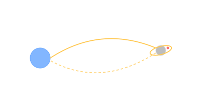

Apollo 11 · July 20, 1969
Three astronauts, a Saturn V, and a moonshot deadline JFK set in 1961. Tranquillity Base, eight years later, on schedule.

101 · zoom in
On May 25, 1961, John F. Kennedy told Congress "this nation should commit itself to achieving the goal, before this decade is out, of landing a man on the Moon and returning him safely to the Earth." Eight years later, almost to the month, Neil Armstrong stepped onto Mare Tranquillitatis. 400,000 people worked on Apollo at peak; the programme cost ~$25 billion (1969 dollars), about 4% of the federal budget at peak.
Apollo 11: Commander Neil Armstrong, CMP Michael Collins, LMP Edwin "Buzz" Aldrin. Saturn V launch July 16; lunar orbit July 19; landing July 20 at 20:17 UTC; first step at 02:56 UTC July 21 (UTC; 22:56 EDT July 20 in the US). Splashdown July 24. 8 days, 3 hours, 18 minutes total.
The moon landing was watched live by an estimated 600 million people — about a fifth of humanity at the time. The "one small step" line was Armstrong's; it was unscripted (he later said he meant to say "one small step for a man" but the indefinite article got lost in transmission).
Saturn V was a 110-meter, three-stage liquid-fuel monster designed under Wernher von Braun (the German V-2 designer, brought to the US under Operation Paperclip in 1945). First stage: 5× F-1 engines, 7.6 million lbf thrust. Still the most powerful rocket to fly successfully (until SLS Block 1 / Starship matched or exceeded it 50+ years later).
Trajectory: free-return loop, the "figure-8" Earth-Moon-Earth. If the lunar-orbit insertion burn failed, Apollo 11 would have looped around the Moon and returned to Earth on the same arc — built-in abort. Apollo 13 used exactly this property when its service module failed, looping behind the Moon and coming home.
Key personnel beyond the crew: George Mueller (NASA Apollo programme director), Christopher Kraft (Mission Control founder), Margaret Hamilton (Apollo Guidance Computer software lead — she ran the team that wrote the AGC code that ran on the LM during descent), Glynn Lunney + Gene Kranz + Cliff Charlesworth (flight directors).
Things-that-could-have-killed-them: AGC alarms 1201 and 1202 during descent (executive overflow — Hamilton's robust software design recovered automatically); manual landing because the auto-target was a boulder field (Armstrong landed with ~25 seconds of fuel left); the LM ascent engine had ONE chance to fire and was untested at full duration in flight.
Apollo flew six successful landings: 11, 12, 14, 15, 16, 17 (1969-1972). Apollo 13 missed the Moon (LOI cancelled), looped behind it, returned safely. 12 humans walked on the Moon; the last (Gene Cernan, Apollo 17) left on December 14, 1972.